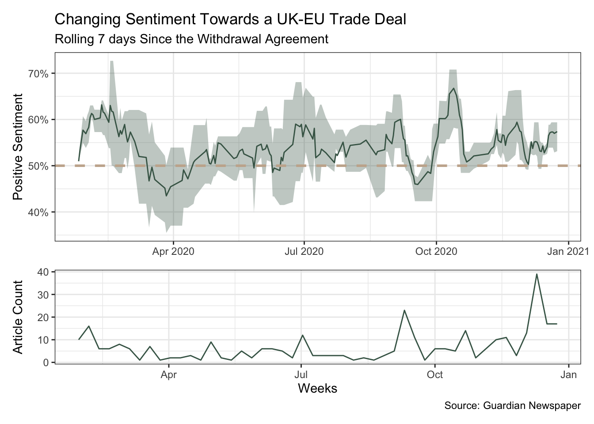

library(conflicted)
library(tidyverse)
conflict_prefer_all("dplyr", quiet = TRUE)
conflict_prefer("as_date", "lubridate")
library(paletteer)
library(guardianapi)
library(quanteda)
library(scales)
library(tictoc)
library(clock)
library(patchwork)
library(text2vec)
library(topicmodels)
library(slider)
library(glue)
library(usedthese)
conflict_scout()A Frosty Deal?
R
textual analysis
word embeddings
natural language processing
Quantitative textual analysis, word embeddings and analysing shifting trade-talk sentiment?

Before the post-Brexit trade negotiations concluded, what did quantitative textual analysis and word embeddings tell us about the shifting trade-talk sentiment?
Reading news articles on the will-they-won’t-they post-Brexit trade negotiations with the EU sees days of optimism jarred by days of gloom. Do negative news articles, when one wants a positive outcome, leave a deeper impression?
Is it possible to get a more objective view from quantitative analysis of textual data? To do this, I’m going to look at hundreds of articles published in the Guardian newspaper over the course of the year to see how trade-talk sentiment changed week-to-week.
theme_set(theme_bw())
n <- 4
palette <- "wesanderson::Chevalier1"
cols <- paletteer_d(palette, n = n)
tibble(x = 1:n, y = 1) |>
ggplot(aes(x, y, fill = cols)) +
geom_col(colour = "white") +
geom_label(aes(label = cols |> str_remove("FF$")),
size = 4, vjust = 2, fill = "white") +
annotate(
"label",
x = (n + 1) / 2, y = 0.5,
label = palette,
fill = "white",
alpha = 0.8,
size = 6
) +
scale_fill_manual(values = as.character(cols)) +
theme_void() +
theme(legend.position = "none")
The Withdrawal Agreement between the UK and the European Union was signed on the 24th of January 2020. Brexit-related newspaper articles will be imported from that date.
Note
Since publishing this article in September 2020, an agreement was reached on December 24th 2020.
The Guardian newspaper asks for requests to span no more than 1 month at a time. Creating a set of monthly date ranges will enable the requests to be chunked.
dates_df <- tibble(start_date = date_build(2020, 1:11, 25)) |>
mutate(end_date = add_months(start_date, 1) |> add_days(-1))
dates_df| start_date | end_date |
|---|---|
| 2020-01-25 | 2020-02-24 |
| 2020-02-25 | 2020-03-24 |
| 2020-03-25 | 2020-04-24 |
| 2020-04-25 | 2020-05-24 |
| 2020-05-25 | 2020-06-24 |
| 2020-06-25 | 2020-07-24 |
| 2020-07-25 | 2020-08-24 |
| 2020-08-25 | 2020-09-24 |
| 2020-09-25 | 2020-10-24 |
| 2020-10-25 | 2020-11-24 |
| 2020-11-25 | 2020-12-24 |
Important
Access to the Guardian’s API via guardianapi(Odell 2019) requires a key which may be requested here and stored in the .Renviron file.
tic()
read_slowly <- slowly(gu_content)
article_df <-
pmap(dates_df, \(start_date, end_date) {
read_slowly(
"brexit",
from_date = start_date,
to_date = end_date
)
}) |>
list_rbind()
toc()The data need a little cleaning, for example, to remove multi-topic articles, html tags and non-breaking spaces.
trade_df <-
article_df |>
filter(!str_detect(id, "/live/"),
section_id %in% c("world", "politics", "business")) |>
mutate(
body = str_remove_all(body, "<.*?>") |> str_to_lower(),
body = str_remove_all(body, "[^a-z0-9 .-]"),
body = str_remove_all(body, "nbsp")
)A corpus then gives me a collection of texts whereby each document is a newspaper article.
trade_corp <- trade_df |>
corpus(docid_field = "short_url",
text_field = "body", unique_docnames = FALSE)Although only articles mentioning Brexit have been imported, some of these will not be related to trade negotiations with the EU. For example, there are on-going negotiations with many countries around the world. So, word embeddings(Selivanov, Bickel, and Wang 2022) will help to narrow the focus to the specific context of the UK-EU trade deal.
The chief negotiator for the EU is Michel Barnier, so I’ll quantitatively identify words in close proximity to “Barnier” in the context of these Brexit news articles.
window <- 5
trade_fcm <-
trade_corp |>
fcm(context = "window", window = window,
count = "weighted", weights = window:1)
glove <- GlobalVectors$new(rank = 60, x_max = 10)
set.seed(42)
wv_main <- glove$fit_transform(trade_fcm, n_iter = 10)INFO [10:54:25.762] epoch 1, loss 0.3788
INFO [10:54:27.135] epoch 2, loss 0.2570
INFO [10:54:28.548] epoch 3, loss 0.2292
INFO [10:54:29.944] epoch 4, loss 0.2090
INFO [10:54:31.337] epoch 5, loss 0.1921
INFO [10:54:32.731] epoch 6, loss 0.1791
INFO [10:54:34.125] epoch 7, loss 0.1694
INFO [10:54:35.518] epoch 8, loss 0.1619
INFO [10:54:36.912] epoch 9, loss 0.1557
INFO [10:54:38.306] epoch 10, loss 0.1506wv_context <- glove$components
word_vectors <- wv_main + t(wv_context)
search_coord <-
word_vectors["barnier", , drop = FALSE]
word_vectors |>
sim2(search_coord, method = "cosine") |>
as_tibble(rownames = NA) |>
rownames_to_column("term") |>
rename(similarity = 2) |>
slice_max(similarity, n = 10)| term | similarity |
|---|---|
| barnier | 1.0000000 |
| negotiator | 0.8060194 |
| michel | 0.8060093 |
| frost | 0.8040999 |
| brussels | 0.7012591 |
| negotiators | 0.6404119 |
| chief | 0.6399011 |
| friday | 0.6363004 |
| team | 0.6253523 |
| negotiations | 0.6246642 |
Word embedding is a learned modelling technique placing words into a multi-dimensional vector space such that contextually-similar words may be found close by. Not surprisingly, one of the closest words contextually is “Michel”. And as he is the chief negotiator for the EU, we find “negotiator” and “brussels” also in the top most contextually-similar words.
The word embeddings algorithm, through word co-occurrence, has identified the name of Michel Barnier’s UK counterpart David Frost. So filtering articles for “Barnier”, “Frost” and “UK-EU” should help narrow the focus.
context_df <-
trade_df |>
filter(str_detect(body, "barnier|frost|uk-eu"))
context_corp <-
context_df |>
corpus(docid_field = "short_url", text_field = "body")Quanteda’s(Benoit et al. 2018) kwic function shows key phrases in context to ensure we’re homing in on the required texts. Short URLs are included below so one can click on any to read the actual article as presented by The Guardian.
set.seed(123)
context_corp |>
tokens(
remove_punct = TRUE,
remove_symbols = TRUE,
remove_numbers = TRUE
) |>
kwic(pattern = phrase(c("trade negotiation", "trade deal", "trade talks")),
valuetype = "regex", window = 7) |>
as_tibble() |>
left_join(article_df, by = join_by(docname == short_url)) |>
slice_sample(n = 10) |>
select(docname, pre, keyword, post, headline)| docname | pre | keyword | post | headline |
|---|---|---|---|---|
| https://www.theguardian.com/p/ep2yb | put pressure on brussels to agree a | trade deal | and iron out problems with the withdrawal | Boris Johnson bows to Tory rebels with Brexit bill compromise |
| https://www.theguardian.com/p/dag4n | expected from parties about to embark on | trade talks | eu member states are due to confirm | Brexit deal ‘a different ball game’ to Canada agreement, warns EU |
| https://www.theguardian.com/p/ekz7e | has gone down badly in brussels in | trade negotiations | usually both sides work out a consolidated | Barnier ‘flabbergasted’ at UK attempt to reopen Brexit specialty food debate |
| https://www.theguardian.com/p/fptbj | the eu followed the usual pattern of | trade talks | down the ages the negotiations seemed to | Brexit talks followed common pattern but barrier-raising outcome is unique |
| https://www.theguardian.com/p/dq896 | text contains a cut-and-paste from the eus | trade deal | with canada stating merely that it would | Brexit talks: Britain accuses EU of treating UK as ‘unworthy’ partner |
| https://www.theguardian.com/p/fmmga | the conservative party for years john harris | trade deals | are not meant to assert sovereignty she | EU leaders stress unity as they welcome Brexit trade talks extension |
| https://www.theguardian.com/p/fv2xh | demanded a last-minute compromise to reach a | trade deal | and avert chaos at the border as | Firms plead for Brexit deal as coronavirus leaves industry reeling |
| https://www.theguardian.com/p/f6444 | canada-style trade deal the eu has a | trade deal | with canada called the comprehensive economic and | What did Boris Johnson mean by an Australia-style system of trade? |
| https://www.theguardian.com/p/fk5kt | companies await news of a potential uk-eu | trade deal | abf said our businesses have completed all | Primark reports ‘phenomenal’ trading since lockdowns ended |
| https://www.theguardian.com/p/evgxe | in talks trying to thrash out a | trade deal | before january but after the chief negotiators | Wednesday briefing: Tory revolt over Cummings piles pressure on PM |
Quanteda provides a sentiment dictionary which, in addition to identifying positive and negative words, also finds negative-negatives and negative-positives such as, for example, “not effective”. For each week’s worth of articles, we can calculate the proportion of positive sentiments.
tic()
sent_df <-
context_corp |>
tokens() |>
dfm(dictionary = data_dictionary_LSD2015) |>
as_tibble() |>
left_join(context_df, by = join_by(doc_id == short_url)) |>
mutate(
pos = positive + neg_negative,
neg = negative + neg_positive,
web_date = date_ceiling(as_date(web_publication_date), "week"),
pct_pos = pos / (pos + neg)
)
sent_df |>
select(Article = doc_id, "Pos Score" = pos, "Neg Score" = neg) |>
slice(1:10)| Article | Pos Score | Neg Score |
|---|---|---|
| https://www.theguardian.com/p/d6qhb | 40 | 22 |
| https://www.theguardian.com/p/d9e9j | 27 | 15 |
| https://www.theguardian.com/p/d6kzd | 52 | 27 |
| https://www.theguardian.com/p/d79cn | 57 | 51 |
| https://www.theguardian.com/p/d6t3c | 28 | 26 |
| https://www.theguardian.com/p/d9vjq | 13 | 23 |
| https://www.theguardian.com/p/d7n8b | 57 | 35 |
| https://www.theguardian.com/p/dag4n | 37 | 38 |
| https://www.theguardian.com/p/d9xtf | 33 | 14 |
| https://www.theguardian.com/p/d7d9t | 23 | 11 |
0.515 sec elapsedPlotting the changing proportion of positive sentiment over time did surprise me a little. The outcome was more balanced than I expected which perhaps confirms the deeper impression left on me by negative articles.
The upper plot shows a rolling 7-day mean with a narrowing ribbon representing a narrowing variation in sentiment.
The lower plot shows the volume of articles. As we drew closer to the crunch-point the volume picked up.
width <- 7
sent_df2 <- sent_df |>
mutate(web_date = as_date(web_publication_date)) |>
group_by(web_date) |>
summarise(pct_pos = sum(pos) / sum(neg + pos)) |>
mutate(
roll_mean = slide_dbl(pct_pos, mean, .before = 6),
roll_lq = slide_dbl(pct_pos, ~ quantile(.x, probs = 0.25), .before = 6),
roll_uq = slide_dbl(pct_pos, ~ quantile(.x, probs = 0.75), .before = 6)
)
p1 <- sent_df2 |>
ggplot(aes(web_date)) +
geom_line(aes(y = roll_mean), colour = cols[1]) +
geom_ribbon(aes(ymin = roll_lq, ymax = roll_uq),
alpha = 0.33, fill = cols[1]) +
geom_hline(yintercept = 0.5, linetype = "dashed",
colour = cols[4], linewidth = 1) +
scale_y_continuous(labels = label_percent(accuracy = 1)) +
labs(
title = "Changing Sentiment Towards a UK-EU Trade Deal",
subtitle = glue("Rolling {width} days Since the Withdrawal Agreement"),
x = NULL, y = "Positive Sentiment"
)
p2 <- summary_df |>
ggplot(aes(web_date, n)) +
geom_line(colour = cols[1]) +
labs(x = "Weeks", y = "Article Count",
caption = "Source: Guardian Newspaper")
p1 / p2 +
plot_layout(heights = c(2, 1))
R Toolbox
Summarising below the packages and functions used in this post enables me to separately create a toolbox visualisation summarising the usage of packages and functions across all posts.
| Package | Function |
|---|---|
| Matrix | t[1] |
| base | as.character[1], c[3], library[14], mean[1], set.seed[2], sum[2] |
| clock | add_days[1], add_months[1], date_build[1], date_ceiling[1] |
| conflicted | conflict_prefer[1], conflict_prefer_all[1], conflict_scout[1] |
| dplyr | filter[2], group_by[1], join_by[2], left_join[2], mutate[5], n[1], rename[1], select[2], slice[1], slice_max[1], slice_sample[1], summarise[2] |
| ggplot2 | aes[6], annotate[1], geom_col[1], geom_hline[1], geom_label[1], geom_line[2], geom_ribbon[1], ggplot[3], labs[2], scale_fill_manual[1], scale_y_continuous[1], theme[1], theme_bw[1], theme_set[1], theme_void[1] |
| glue | glue[1] |
| lubridate | as_date[2] |
| methods | new[1] |
| mlapi | fit_transform[1] |
| paletteer | paletteer_d[1] |
| patchwork | plot_layout[1] |
| purrr | list_rbind[1], pmap[1], slowly[1] |
| quanteda | corpus[2], dfm[1], fcm[1], kwic[1], phrase[1], tokens[2] |
| scales | label_percent[1] |
| slider | slide_dbl[3] |
| stats | quantile[2] |
| stringr | str_detect[2], str_remove[1], str_remove_all[3], str_to_lower[1] |
| text2vec | sim2[1] |
| tibble | as_tibble[3], rownames_to_column[1], tibble[2] |
| tictoc | tic[2], toc[2] |
| usedthese | used_here[1] |
References
Benoit, Kenneth, Kohei Watanabe, Haiyan Wang, Paul Nulty, Adam Obeng, Stefan Müller, and Akitaka Matsuo. 2018. “Quanteda: An r Package for the Quantitative Analysis of Textual Data” 3: 774. https://doi.org/10.21105/joss.00774.
Odell, Evan. 2019. “Guardianapi: Access the ’Guardian’ Newspaper Open Data API.” https://doi.org/10.5281/zenodo.2551001.
Selivanov, Dmitriy, Manuel Bickel, and Qing Wang. 2022. “Text2vec: Modern Text Mining Framework for r.” https://CRAN.R-project.org/package=text2vec.